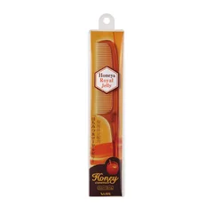
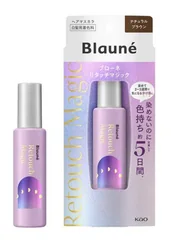
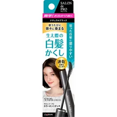
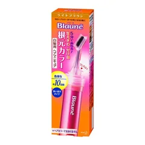
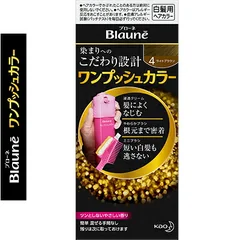

まず0円の分け目ずらしに（ジグザグにとりたい人）

ベス
ハニーテールコーム
全長190mm・テールコーム
¥430税込・出典掲載価格
選び方と声
- 選ぶ条件：いつもの分け目をずらしたり、ジグザグにとったりしたい人
- 細い柄の先を地肌に当ててジグザグに引き、左右に倒す
- 目が細かいのに髪が絡まずに通る、長さがちょうどいい、2本目を買った、という声
気になる声気になる点：細いので、髪が多い人だと少しやわらかくて不安という声も
販売価格・容量・送料はリンク先でご確認ください
THE COSME EDIT / 2026.10.14
動画と同じ写真・名前・順番で並べています。見出しは順位ではなく、選ぶ条件です。5つそろえる前提ではありません。染めて2週間で分け目に白い線が出るたびに、毛先まで全部染め直していた人が、染める回数は増やさずに、あいだの2週間を変えた、という話を会話でまとめました。まずは買わなくてもできること（分け目を1センチずらす、分け目の反対側からドライヤーを当てる）を試してから、自分に当たる1つか2つだけ選んでください。ガールズちゃんねるの白髪染め・分け目のトピから声を集め、分け目の工夫と染め方は花王・ホーユーの公開情報で確かめたもので、結果を保証するものではありません。ヘアカラー（医薬部外品）は、染める48時間前に毎回パッチテストを。かゆみや赤みが出たら使用をやめ、ひどい場合は皮膚科へ。
05 ITEMS 動画で紹介した商品
動画では商品のほかに、分け目の根元にヘアスプレーを軽くしてから分けること、根元がぬれているうちに指をジグザグに動かして根元を起こすように乾かすこと、リタッチマジックを塗った日はヘアオイルを毛先だけにすること、根元だけ染めるときは色を今の毛先に近いものにして毛先まで伸ばさないこと、失敗しても自己判断で重ね染めしない・置き時間を延ばさないことも話しています。
価格は出典掲載時のものです。楽天の現在価格とは異なる場合があります。

ベス
全長190mm・テールコーム
¥430税込・出典掲載価格
選び方と声
気になる声気になる点：細いので、髪が多い人だと少しやわらかくて不安という声も
販売価格・容量・送料はリンク先でご確認ください

ブローネ
14ml・白髪用ヘアマスカラ
¥1582税込・出典掲載価格
選び方と声
気になる声気になる点：塗ったところが固まってゴワつくという声がいちばん多く、5日はもたなかったという声も
販売価格・容量・送料はリンク先でご確認ください

サロンドプロ
15ml・白髪かくし
¥660税込・出典掲載価格
選び方と声
気になる声気になる点：汗をかくと溶けて顔や服に色がつく、落とすときに手に黒いのが残ったという声も
販売価格・容量・送料はリンク先でご確認ください

ブローネ
28g・白髪用ヘアマニキュア
¥809税込・出典掲載価格
選び方と声
気になる声気になる点：頭皮や顔・耳についたら落ちにくいという声。塗る前にクリームで守る。染まらなかったという声も
販売価格・容量・送料はリンク先でご確認ください

ブローネ
1剤40g＋2剤40g・白髪用ヘアカラー
¥780税込・出典掲載価格
選び方と声
気になる声気になる点：1剤と2剤を同じように出さないと染まりにくかった、残しておいたら出口の色が変わっていた、という声も。Amazonは公式ではない出品者のみだったため楽天にしています
販売価格・容量・送料はリンク先でご確認ください
SOURCE & NOTES
集計期間：2026年10月13日に確認
価格は2026年10月13日に確認した税込価格です（掲載時点）。ワンプッシュカラーだけ楽天（楽天ビック）、ほかの4つは Amazon（販売元 Amazon.co.jp・ハニーテールコームはベス公式ショップ）の価格です。価格は変わることがあります。購入前にリンク先でご確認ください。見出しは選ぶ条件で、順位ではありません。